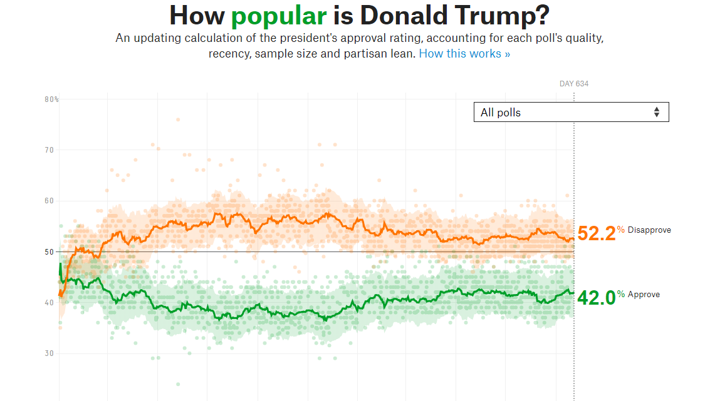
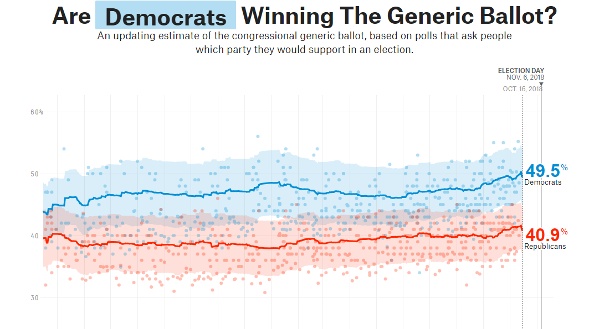

I am super interested in elections, election forecasting, and post-election analysis. One thing that happens when one really immerses themselves in this topic, though, is a creeping sense that (at least general) elections are driven by these over-arching deterministic fundamentals that have little to do with which party is more competent or reflective of the people’s will. It’s that as sense that, to a first approximation, nothing that we think should matter actually matters in the long run.
The 2016 election was not that radically different than 2012, despite it featuring the two most unpopular candidates of all time, one of whom was the least conventional candidate in at least a generation and who was in (in his campaign rhetoric and persona) very different than the previous nominee of his party. Sure, certain pre-existing trends were accelerated a little bit. The professional class shifted toward the Democrats a little bit faster than they had already been, and working class whites in the north and Appalachia shifted toward the Republicans a little faster than they had been. But in the big picture, the election was well within the margin of error for fundamentals-based models.
Take a look at Trump’s approval rating:

Trump’s disapproval ticks up a little bit when Comey is fired, and ticks down a little bit once healthcare and the tax bill fade from the news cycle. But fundamentally, only 3%-5% of the public is changing their minds at any given point, and most big events don’t seem to have any impact at all (remember the Trump and Putin in Helsinki controversy? can you find it on this chart?).
What about the generic ballot?

Even less variable than Trump’s approval! Does anything matter? It looks like Democrats’ fortunes were ever so slightly better when the tax bill was in the news a bunch, but other than that there has been stasis. I don’t see any movement related to Kavanaugh, for example, only party bases consolidating in the last month of an election as expected.
People talk a lot about how Obama lost his party a lot of power downballot, leading to an ineffectual left. This is true, but it’s mostly not because of incompetence on Obama’s part. You would expect the President’s party to lose a ton of elections in the valley of the worst recession in two generations (2010), which was the year most of the downballot damage was done.Then you would expect modest changes from that baseline afterwards in a slow-growing economy, and a close Presidential election in 2016.
Over the past 10 years, the only election that was actually affected strongly by more concrete political and policy decisions was maybe the 2013 Virginia gubernatorial election, where the Democrats may have hung on only because the GOP shut down the government a few weeks prior and tarnished their brand for a short time.
American politics seems to particularly to be in a rut right now despite all the weird stuff going on. There have been interesting and dramatic developments in European polling and elections recently, for instance. Possibly some combination of a polarized two party system and first past the post has lead to this stasis, but it’s hard to say.
Culture war. Which is the sociocultural extension of polarization. Plus the two-party system and FTTP, as you say.
…that’s a bit of a pat answer, but I do think it’s largely what’s responsible. In order to get political shakeups, voters have to feel like they have alternatives to which they can move. So long as we have a two-faction system, and any attempt to create a third faction will mostly have the effect of damaging the faction from which it draws, and the enemy faction is Satan, there’s really nothing you can do but keep voting the party line no matter how disappointing your party becomes.
The people I know in real life are a very mixed bag politically and intellectually, running from classical liberals to sophisticated SJW types to something-like-communists to libertarians to gritty business pragmatists to proponents of insane homebrewed blue-and-orange theories. And yet none of them would ever consider voting Republican, not unless something very substantive changes. Nor should they! By any of their standards, the Republicans are so much worse than the alternatives! And, uh, I gather that sentiments are similar over on the other side.